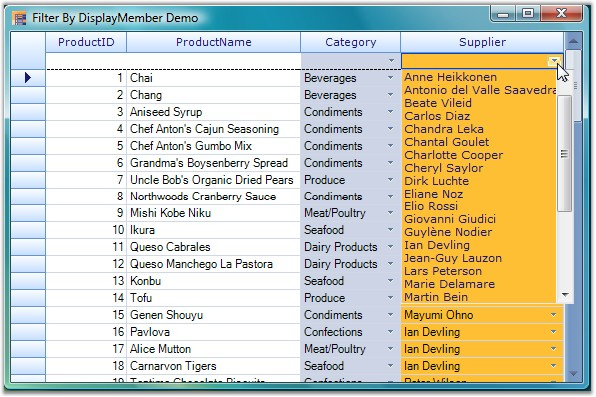
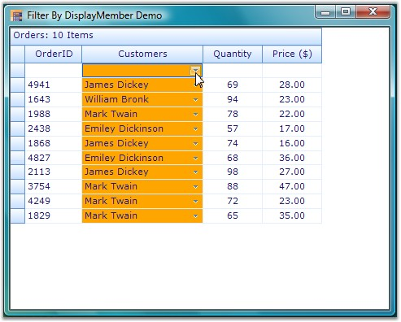

This topic elaborates on filtering columns in the Grid Data Bound Grid and Grid Grouping controls by their display member.
Filtering Columns in Grid Data Bound Grid
The GridDataBoundGridFilterBarExt class provides support to filter a column in the Grid Data Bound Grid by its display member instead of the value member. This is accomplished by implementing a custom filter bar cell by replacing the default filter bar cell.
Following code example illustrates how to wire the GridDataBoundGridFilterBarExt to the Grid Data Bound Grid.
1. Using C#
|
[C#]
private GridDataBoundGridFilterBarExt filterBar; filterBar = new GridDataBoundGridFilterBarExt(); filterBar.WireGrid(this.gridDataBoundGrid1); |
2. Using VB.NET
|
[VB.NET]
Private filterBar As GridDataBoundGridFilterBarExt filterBar = New GridDataBoundGridFilterBarExt() filterBar.WireGrid(Me.gridDataBoundGrid1) |
Following screen shot illustrates how to filter a column in the Grid Data Bound Grid by its display member.

Figure 468: Filtering a column in the Grid Data Bound Grid by its Display Member
Filtering Columns in Grid Grouping Control
The GroupingGridFilterBarExt class provides support to filter a column in the Grid Grouping control by its display member instead of the value member. This is accomplished by implementing a custom filter bar cell by replacing the default filter bar cell.
Following code example illustrates how to wire the GroupingGridFilterBarExt to the Grid Grouping control.
1. Using C#
|
[C#]
private GroupingGridFilterBarExt gGCFilter; this.gGCFilter = new GroupingGridFilterBarExt(); this.gGCFilter.WireGrid(this.gridGroupingControl1); |
2. Using VB.NET
|
[VB.NET]
Private gGCFilter As GroupingGridFilterBarExt Me.gGCFilter = New GroupingGridFilterBarExt() Me.gGCFilter.WireGrid(Me.gridGroupingControl1) |
Following screen shot illustrates how to filter a column in the Grid Grouping control by its display member.

Figure 469: Filtering a column in the Grid Grouping control by its Display Member